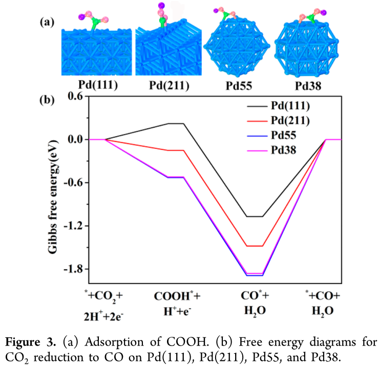
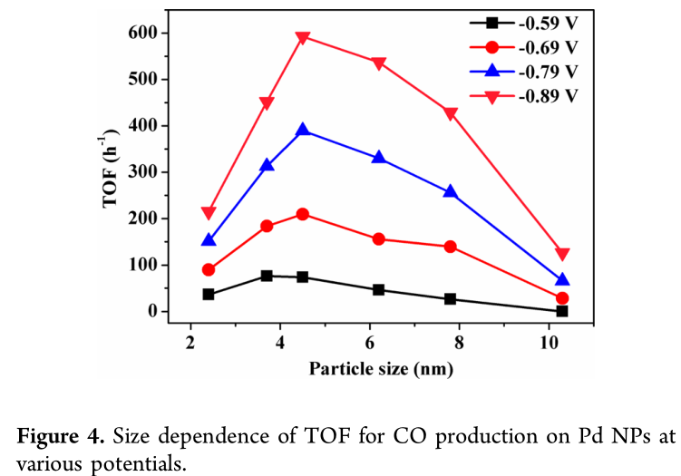
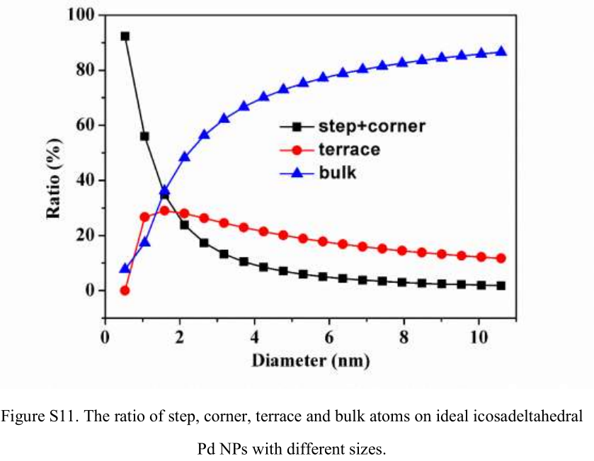
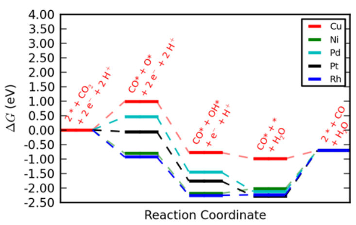

CO2热力学较为稳定（标准摩尔生成焓为-393.51 kJ•mol-1）、惰性、不易活化（C=O键键能为~750 kJ•mol-1）。因此，实现CO2在温和条件下的化学转化是一项极具挑战性的研究。CO2电化学还原可将太阳能、风能等可再生能源转化的电能进一步转化成化学能，储存在高附加值的燃料与化学品中。尽管CO2电化学还原逐步引起各国科学家的关注和研究兴趣，但该领域仍然存在许多亟待解决的问题，例如：（1）过高的外加电势（或低能量效率）；（2）缓慢的电子传递动力学；（3）产物的选择性不理想；（4）偏电流密度过低（仅几十毫安每平方厘米）；（5）催化剂的稳定性与耐久性欠佳（小于100小时）等。上述问题极大地限制了已有电极催化材料的实际应用和商业化。基于此，开发高性能的催化材料，降低CO2电化学还原的过电位，提高催化材料的活性、选择性和稳定性具有重要的科学意义和工业价值。(From X-Mol)
与传统的催化材料相比，二维纳米材料（纳米片）具有更大的比表面积，有利于反应物的扩散；具有更多暴露的活性位点，有利于界面电荷的快速转移。同时，二维材料可以通过异质原子（金属或非金属元素）掺杂进一步增加低配位的原子比，促进反应物的化学吸附与活化；此外，人们也可通过控制空位缺陷和外界刺激（电场、应变、光照等）实现对电子结构的调节，有效调节其催化性质。近年来，二维纳米结构的金属（如Co、Ag、Sb纳米片）、金属氧化物（如SnO2、Co3O4）、金属硫族化物（如MoS2、WSe2、SnS2、MoSeS和Mo-Bi双金属硫化物等）以及二维碳材料（单原子掺杂、多原子掺杂石墨烯）等在CO2电化学还原领域均表现出巨大的潜力。(From X-Mol)
G(T)=H(T)-TS H(T)=E{elec}+E_{ZPE}+\int_{0K}^T C_V dT E_{ZPE}=\frac{1}{2}\sum\limits_{i=0}^{\#DOF}\hbar\omega_i \int\limits_{0K}^TC_VdT=\sum\limits_{i=0}^{\#DOF}\frac{\hbar\omega_i}{exp(\hbar\omega/k_BT)-1} S(T)=k_B\sum\limits_{i=0}^{\#DOF}(\frac{\hbar\omega_i/k_BT}{\exp(\hbar\omega_i/k_BT)-1}-ln(1-exp(-\hbar\omega_i/k_BT)))
| Species | Fugacity (Pa) | E_{elec} (eV) | ZPE (eV) | \int C_p dT (eV) | -TS (eV) | \mu (eV) |
|---|---|---|---|---|---|---|
| CO2 | 101325 | 0.90 | 0.31 (0.3067) | 0.10 (0.0716) | -0.65 (-0.6456) | 0.66 |
| CO | 5562 | 1.75 | 0.14 (0.1318) | 0.09 (0.0628) | -0.67 (-0.6680) | 1.31 |
| H2 | 30296 | -0.00 | 0.27 (0.2676) | 0.09 (0.0628) | -0.42 (-0.4220)) | -0.06 |
| HCOOH | 2 | 0.92 | 0.90 (0.8869) | 0.11 (0.0874) | -1.02 (-1.0217) | 0.91 |
| CH3OH | 6079 | 0.06 | 1.35 | 0.11 | -0.79 | 0.73 |
| H2O | 3534 | 0.03 | 0.58 (0.5678) | 0.10 (0.0755) | -0.65 (-0.6530) | 0.05 |
| CH4 | 20467 | -1.22 | 1.20 (1.1859) | 0.10 (0.0765) | -0.60 (-0.6009) | -0.53 |
| CH2O | 101325 | 1.19 | 0.70 | 0.10 | -0.66 | 1.34 |
| C2H4 | 13942 | -0.01 | 1.36 | 0.11 | -0.71 | 0.74 |
| H2 (ref) | 101325 | -0.00 | 0.27 (0.2676) | 0.09 (0.0628) | -0.39 (-0.3916) | -0.03 |
| Adsorbate | ZPE (eV) | \int C_p dT (eV) | -TS | G-E_{elec} | |
|---|---|---|---|---|---|
| OH^* | 0.364 (0.3580) | 0.046 (0.0462) | -0.079 (-0.0851) | 0.331 | |
| CO^* | 0.192 (0.1835) | 0.076 (0.0776) | -0.153 (-0.1741) | 0.115 | |
| OCHO^* | 0.624 | 0.102 | -0.234 | 0.491 | |
| H^* | 0.160 | 0.005 | -0.007 | 0.159 | |
| COOH^* | 0.624 | 0.096 | -0.178 | 0.542 | |
| CHO^* | 0.444 | 0.086 | -0.184 | 0.346 | |
| CH_2O^* | 0.758 | 0.091 | -0.190 | 0.659 | |
| CH_3O^* | 1.108 | 0.093 | -0.179 | 1.022 | |
| O^* | 0.072 | 0.025 | -0.038 | 0.059 |
Table S8: Comparison of the gas-phase errors encountered with the RPBE and PBE exchangecorrelation functionals. MAE compares the mean absolute error (in eV) of the reactions in Table S6. The numbers next to the molecules indicate the optimal correction to each species to minimize the MAE, considering single molecules only.
| RPBE | PBE | |
|---|---|---|
| MAE | .309 | .334 |
| CO | -.18 | -.51 |
| CO2 | +.41 | +.13 |
| H2 | +.09 | -.08 |
| H2O | -.21 | -.06 |
| Pathway | RPBE | PBE |
|---|---|---|
| Limiting step and potential | ||
| H2 | ^*\rightarrow H^* -0.03 eV | H^*\rightarrow H_2 -0.09 eV |
| HCOOH | ^*+CO_2\rightarrow COOH^* -0.41 eV | OCHO^*\rightarrow HCOOH -0.32 eV |
| CO | ^*+CO_2\rightarrow COOH^* -0.41 eV | ^*+CO_2\rightarrow COOH^* -0.46 eV |
| CH4 | CO^* \rightarrow CHO^* -0.74 eV | CO^* \rightarrow CHO^* -0.61 eV |
Table S9: Comparison of limiting potentials and steps for RPBE and PBE functionals.
^*+H^++e^- \rightarrow H^*
H^*+H^++e^- \rightarrow ^*+ H_2
^*+CO_2+H^++e^-\rightarrow COOH^*
OCHO^*+H^++e^-\rightarrow HCOOH + ^*
CO^*+H^++e^-\rightarrow CHO^*
The accelerated depletion of fossil fuel resources leads to increasing accumulation of greenhouse gas, CO_2, in the atmosphere, which raises serious environmental concerns.(1) To reduce our dependence on fossil fuels, renewable energy sources, such as solar and wind energies, are growing up rapidly, but these renewable electricities are difficult to merge into the electricity grid due to their intermittent and local nature, and further expansion is highly limited by a lack of efficient energy storage and conversion techniques.(2) Electrocatalytic reduction of CO_2 to fuel and chemical feedstock, powered by intermittent renewable electricity, is an attractive route for simultaneous conversion of CO_2 and renewable energy sources.(3) However, there are several fundamental challenges in the electrocatalytic reduction of CO_2, such as high overpotential, low Faradaic efficiency due to the competitive hydrogen evolution reaction (HER), etc.(4, 5) Key points in addressing these issues are the successive CO_2 adsorption,(6-9) intermediates formation,(10, 11) and product removal(12, 13) on active sites during the electrocatalytic reaction.
Various metallic electrodes have been screened thoroughly, and it is found that the trends on product composition and distribution are strongly dependent on the binding energy of intermediates on metals.(14) For instance, CO_2 is converted into CO on Au and Ag and into hydrocarbons on Cu due to the adsorption strength of CO^* intermediates on metals.(14) Varying the particle size has also shown a size effect on the electrocatalytic reduction of CO_2, where the dependence of Faradaic efficiency and current density on particle size has been observed on Ag,(15) SnO2,(16) Cu,(17) and Au(18, 19) nanoparticles (NPs). However, there have been limited studies looking into the size effect among NPs smaller than 10 nm, which are most commonly used in catalysis. Recently, studies on the CO_2 reduction reactivity trends over Au NPs within a very narrow size range of ∼1–8 nm(18) or 4–10 nm(19) were reported. Current density for both CO and H_2 production increases obviously with decreasing the size of Au NPs along with the decrease in Faradaic efficiency toward CO production. Density functional theory (DFT) calculations reveal that the edge site on Au NPs is much more active than terrace and corner sites for CO_2 reduction to CO, while corner sites are highly active for competitive HER.
In order to understand the relationship between the CO_2 reduction reactivity and the size of Pd NPs, DFT calculations were conducted. It is still a computational challenge to directly simulate the CO_2 reduction over Pd NPs with different sizes by means of DFT calculations. However, it is possible to simulate the process over three different reaction sites (terrace, edge, and corner) of Pd NPs, represented by flat Pd(111) surfaces, stepped Pd(211) surfaces, and Pd_{55} (or Pd_{38}) clusters, respectively. Furthermore, according to the ratio of three kinds of reaction sites (terrace, edge, and corner) on ideal Pd NPs with different sizes, it is reasonable to build the intrinsic relationship between catalytic properties and NPs size.(22) CO_2 weakly adsorbs on Pd(111), Pd(211), Pd_{55} with 0.23, −0.11, and −0.21 eV respectively, and CO_2 prefers to be away from Pd(111) (Figure S6). The calculated Gibbs free energy diagrams for CO_2 reduction into CO on Pd(111), Pd(211), Pd_{55} , and Pd_{38} at 0 V (vs RHE) are shown in Figure 3 according to the methodology proposed by Nørskov et al.(23) It is seen that on Pd(111), the formation of COOH^*, a key reaction intermediate of CO_2 reduction, is associated with an increase in free energy (0.22 eV), while on Pd(211) and Pd_{55} , COOH^* is very stable with a release of −0.15 and −0.53 eV, respectively. Therefore, the formation of reaction intermediate COOH^* becomes easier from terrace (Pd(111)), stepped (Pd(211)) to corner ( Pd_{55} ). Pd_{38} has a free energy similar to that of Pd_{55} . On these models, the formation of CO^*, another reaction intermediate, are all exergonic with Gibbs free energy changes very similar to that of COOH^*, because the conversion of COOH^* to CO^* is typically facile.(21, 24) Therefore, it is concluded that the formation of COOH^* is a key electrochemical step for CO_2 reduction to CO.

The main reason for different changes of Gibbs free energies on different reaction sites is that the adsorption of COOH and CO become stronger from terrace to step to corner site (Figure 3 and Figure S7). These calculations well explain that Pd NPs have positive shifts in the position of the reduction peak of Pd(OH)2 in the cathodic scan(25) between 0.9 and 0.5 V with increasing particle size (Figure S8). The reduction peak potential of Pd(OH)2 shows a linear increase with increasing the size of Pd NPs (Figure S8c), since a stronger hydroxyl adsorption on defects (corner and edge sites), corresponding to small Pd NPs, than on terrace sites for large Pd NPs.(26) The strong adsorption of CO on Pd NPs could be probed by the electrochemical CO stripping voltammetry method.(25) As shown in Figure S9, a broad CO stripping profile with a dominant peak around 1.03 V (vs RHE) occurs on 2.4, 3.7, and 4.5 nm Pd, whereas there is a sharp peak around 0.9 V (vs RHE) with a shoulder peak around 1.03 V (vs RHE) on 6.2, 7.8, and 10.3 nm Pd. The negative shift on peak potential and the reduced current density at 1.03 V (vs RHE) with increasing particle size suggest the weakened adsorption of CO on Pd NPs, in consistent with the DFT calculations (Figure S7). From the calculated Gibbs free energy diagrams, the formation of H_2 has tiny differences on these models (Figure S10), and the overall Gibbs free energy changes is much smaller than that for the formation of CO^*, indicating that CO_2 reduction is predominant under the present experimental conditions.
According to the DFT calculation results, the corner and edge sites on Pd NPs are considered active for CO2 reduction, and the corner, edge, and terrace sites are all active for HER. TOF for CO or H_2 production on Pd NPs at various potentials was calculated according to the ratio of corner and edge or the ratio of corner, edge, and terrace in Pd NPs (Figure S11). Figure 4 shows the size dependence of TOF for CO production at various potentials. The maximum TOF varies from 3.7 to 4.5 nm Pd when the applied potential is shifted from −0.59 to −0.89 V (vs RHE) gradually. The sluggish removal of CO^* at a high coverage on 3.7 nm Pd, having a higher ratio of corner and edge sites, probably retards the increase of TOF with the potential, compared with that on 4.5 nm Pd. The difference of TOF for CO production over differently sized Pd NPs is enlarged at high applied potentials, revealing that the electrochemical step for formation of HCOO^* and CO^* becomes dominant on the reaction rate.


Binding energies derived from scaling relations were used to create estimates of the limiting potential of each elementary hydrogenation step; a more complete explanation is provided herein.
The “computational hydrogen electrode” technique uses simple thermodynamic relations to take advantage of the fact that electrical potentials are reported relative to an experimental reference electrode. A simplified explanation is contained herein, more complete details can be found in refs.[1,8]. The electrode chosen as a reference in this work is the reversible hydrogen electrode (RHE), which is defined to have zero voltage when 1 bar H2 gas is bubbled over a Pt electrode at all values of pH and temperature. By design, at the reference electrode surface, the reaction \frac{1}{2}H_{2(g)}\leftrightarrow{H}^++e^- is in equilibrium. Thermodynamics tells us that a reaction at equilibrium will have zero change in free energy across the reaction, so in terms of chemical potential (\mu), \mu[H^+]+\mu[e^-]=0.5\mu[H_{2(g)}] at 0 V vs RHE. Free energy (G) and electrical potential (U) can be related by \Delta{G} = −eU, where e is the (positive) charge of an electron. Thus, the free energy of a proton-electron pair as a function of potential can be found as \mu[H^+]+\mu[e^-]=0.5\mu[H_{2(g)}]-eU We are interested in the limiting potentials (U_L) of elementary hydrogenation reactions, defined as the potential at which the reaction becomes exergonic, or downhill in free energy. For an example reaction of the protonation of adsorbed CO to produce adsorbed CHO, the elementary hydrogenation reaction can be written as CO^*+H^++e^-\rightarrow{CHO}^* where an asterisk, *, indicates a surface-bound species (for example, CO bound to the fcc (211)facet of copper). The free energy change of the elementary reaction will be \Delta{G}_{elem}=\mu[CHO^*]-\mu[CO^*]-\mu[H^++e^-] =\mu[CHO^*]-\mu[CO^*]-0.5\mu[H_{2(g)}]-eU By the earlier definition, \Delta{G}_{elem}=0 at U=U_L, so U_L=-\frac{\mu[CHO^*]-\mu[CO^*]-0.5\mu[H_{2(g)}]}{e}=\frac{-\Delta{G}_{elem}^{0V}}{e}(7) This is identical to previous analyses.
In order to find the limiting potential (U_L) as a function of a single parameter, E_B[CO] (the binding energy of CO), the scaling relations in Figure 1 of the main text were used. The binding energy of CHO can be related to that of CO by E_B[CHO]=0.88E_B[CO]+2.03eV The binding energies, E_B , were converted to chemical potentials by the free energy corrections calculated with standard statistical mechanics methods, \mu[CHO^*]=E_B[CHO]+G_{corr}[CHO^*] \mu[CO^*]=E_B[CO]+G_{corr}[CO^*] where the G_{corr} terms contain the zero-point, enthalpic (heat-capacity), and entropic portions of the free energy, and were calculated identically to the quantities described in-depth in the supplementary information of ref..[1] These chemical potentials are used in conjunction with equation (7) above to predict the limiting potentials of each elementary step. This approach predicts the theoretical overpotential for the onset of CH_4 production to within about 0.1 V of direct DFT calculations[1], and allows the limiting potentials to be expressed as functions of the two variables E_B[CO] and E_B[OH].
In this work we consider the acid reaction mechanism, consisting of coupled e- and H+ transfers:
CO_2(g)+*+H^+(aq)+e^-{\leftrightarrow}COOH^* (S.1.a)
COOH^*+e^-+H^+(aq){\leftrightarrow}CO^*+H_2O(l) (S.2.a)
CO^*{\leftrightarrow}CO+^* (S.3.a)
Reaction free energies of the acidic electrochemical steps are calculated using the computational hydrogen electrode[8].
The reaction free energies of (S.1) and (S.2) as function of the applied potentials are given by {\Delta}G_1=G_{COOH^*}-G_{^*}-\mu_{CO_2(g)}-\frac{1}{2}\mu_{H_2^\Theta}+eU and {\Delta}G_2=G_{CO^*}+\mu_{H_2O(l)}-G_{COOH^*}-\frac{1}{2}\mu_{H_2^\Theta}+eU where U is the potential relative to the reversible hydrogen electrode (RHE) at the same pH as the reactions.
The free energy of a species is calculated according to G=E_{DFT}+E_{ZPE}+\int{C_pdT}-TS where E_{DFT} is the (corrected) DFT total energy including the effect of solvation, E_{ZPE} is the zero point energy, C_p is the heat capacity and S is the entropy. The latter three quantities are calculated from statistical mechanics within the harmonic approximation, taking the vibrational frequencies of adsorbates and molecules as calculated within DFT. We expect variations in E_{ZPE} , C_p and S are small compared to the variations in the reaction energies based on E_{DFT} alone and assume E_{ZPE} , C_p and S are constant for all materials considered in this study. We use values that have been published previously for Cu(211)[1], and explicit tests for other metal surfaces confirm the validity of this approximation.
The relevant corrections to adsorbates and molecules are reproduced in table S1, and the effective corrections are listed in Table S2.
| Species | E_{DFT,J}(eV) | E_{DFT,GPAW}(eV) | E_{ZPE} | \int{C_pdT} | -TS (eV) |
|---|---|---|---|---|---|
| H_2(g) | -32.031 | -6.716 | 0.27 | 0.09 | -0.39 |
| CO_2(g) | -1030.000 | -22.666 | 0.31 | 0.10 | -0.65 |
| CO(g) | -591.423 | -14.631 | 0.14 | 0.09 | -0.60 |
| H_2O(g=l) | -469.729 | -14.027 | 0.58 | 0.10 | -0.65 |
| COOH^* | 0.62 | 0.10 | -0.18 | ||
| CO^* | 0.19 | 0.08 | -0.15 |
| Reaction | E_{ZPE} | {\int}C_pdT (eV) | -TS (eV) | Total (eV) |
|---|---|---|---|---|
| CO_2(g)+*+H^+(aq)+e^-{\leftrightarrow}COOH^* | 0.18 | -0.05 | 0.67 | 0.80 |
| COOH^*+e^-+H^+(aq){\leftrightarrow}CO^*+H_2O(l) | 0.01 | 0.04 | -0.43 | -0.38 |
| CO^*{\leftrightarrow}CO+^* | -0.05 | 0.01 | -0.44 | -0.48 |
A correction of +0.45 eV is applied to the CO2 molecule in the gas phase in order to correct for a systematic error on this molecule when using the RPBE functional[1]. The effect of solvation is treated in an approximate way for the metals, alloys and cubanes by stabilizing COOH^* by 0.25 eV and CO^* by 0.1 eV as in Reference[1]. For the CODH enzymes no correction for solvation is applied since only little water is expected to be present within the interior of the enzyme and the model of the enzyme already contain ligands that may hydrogen bond to the adsorbate. The reaction energies of (S.1.a), (S.2.a) and (S.3.a) including solvation but without the correction to the CO 2 molecule are shown in Table S4. We note that \Delta{E}_1(solv)=E(COOH(solv)) and \Delta{E}_3(solv)=-E(CO(solv)). Table S4 also shows the reaction free energies calculated using the free energy corrections in Table S2 and the +0.45 eV correction to the CO 2 molecule.
In this treatment we have neglected contributions from the electric field at the electrochemical interface on the free energy of the adsorbates.
The reversible potential of the overall half-cell reaction CO_2+2H^++2e^-{\rightarrow}CO+H_2O calculated from DFT is then -0.18 V vs RHE, while the experimental value is -0.10 V vs RHE. Figure 2 is plotted at 0.35 V overpotential relative to the experimental reversible potential.
| E(*) (eV) | E(COOH^*)(eV) | E(CO^*) (eV) | |
|---|---|---|---|
| Cu | -45195.300 | -46241.000 | -45787.399 |
| Au | -37524.623 | -38569.972 | -38116.438 |
| Ag | -34909.217 | -35954.456 | -35500.821 |
| Pt | -32662.145 | -33708.682 | -33255.540 |
| Pd | -2853689 | -2958746 | -2912919 |
| Ni | -35226.182 | -36272.508 | -3581917 |
| Rh | -22884.021 | -23930.605 | -23477.370 |
| ChCODH | -685.249 | -711.114 | -700.37 |
| MbCODH | -671.634 | -697.388 | -686.506 |
| \Delta{E}_1(solv) (eV) | \Delta{E}_2(solv) (eV) | \Delta{E}_3(solv) (eV) | \Delta{G}_1^0 (eV) | \Delta{G}_2^0 (eV) | \Delta{G}_3^0 (eV) | |
|---|---|---|---|---|---|---|
| Cu | 0.07 | 0.04 | 0.78 | 0.42 | -0.34 | 0.30 |
| Au | 0.42 | -0.03 | 0.49 | 0.77 | -0.41 | 0.01 |
| Ag | 0.53 | 0.07 | 0.28 | 0.88 | -0.31 | -0.20 |
| Pt | -0.77 | -0.42 | 2.07 | -0.42 | -0.80 | 1.59 |
| Pd | -0.29 | -0.74 | 1.91 | 0.06 | -1.12 | 1.43 |
| Ni | -0.56 | -0.37 | 1.81 | -0.21 | -0.75 | 1.33 |
| Rh | -0.82 | -0.33 | 2.03 | -0.47 | -0.71 | 1.55 |
| ChCOD H | 0.16 | 0.07 | 0.50 | 0.51 | -0.31 | 0.02 |
| MbCOD H | 0.27 | 0.21 | 0.24 | 0.62 | -0.17 | -0.24 |
Reactive materials may dissociate CO2 without the need to form COOH* as an intermediate. One such possiblilty is the following mechanism CO_2(g)+2^*{\leftrightarrow}CO^*+O^* O^*+e^-+H^+{\leftrightarrow}OH^* OH^*+e^-+H^+{\leftrightarrow}H_2O(l)+^* CO^*{\leftrightarrow}CO+^* The free energy diagram for this mechanism on Cu, Ni, Pd, Pt and Rh are show in figure S1 at U_0-0.3 V vs RHE based on DFT calculations from Ref..[7] It is seen tha desorption will severly limit the rate of CO evolution on Ni, Pd, Pt and Rh. Direct CO 2 dissociation on Cu(211) has been calculated to have a barrier of 1.6 eV (4), and is therefore expected to be kinetically prohibited.

Fig. S1: Free energy diagrams for direct CO2 dissociation at U_0-0.35 V vs RHE.
The rate equations are r_1=k_1\theta*p_{CO_2}-k_{-1}{\theta}_{COOH} r_2=k_2\theta_{COOH}-k_{-2}{\theta}_{CO} r_1=k_3\theta_{CO}-k_{-3}{\theta}*p_{CO} where {ki } and {k-i} are rate constants for the forward and backwards reactions, respectively. The {pi} and {\thetai} denote pressure and surface coverages, respectively. The forward rate constants for step (1) and (2) are calculated from k_i=A'exp(-\frac{\beta{e}(U-U_i^0)}{k_BT}) , where U_i^0 is the reversible potential for step i, U_i^0=-\frac{\Delta{G}_i^0}{e} , with G_i^0 being the standard reaction free energy at 0 V vs RHE.
I.e. \Delta{G}_1^0=G_{COOH^*}-G_{^*}-\mu_{CO_2(g)}-1/2\mu_{H_2^{\theta}} and \Delta{G}_2^0=G_{CO^*}-G_{COOH^*}+\mu_{H_2O(l)}-1/2\mu_{H_2^{\theta}} We set a maximum value for the prefactors of electrochemical steps at k_B T/h=6\cdot10^{12} s-1. Our results are not sensitive to the exact value of this cutoff.
The rate constants for the backwards electrochemical reactions are calculated from k_{-i}=k_i/K_i=k_{i}e^{\Delta{G}_i/(k_BT)}=k_{i}e^{(\Delta{G}_i^0+eU)/(k_BT)} The rate constant for the CO desorption step is calculated from k_3=\nu{e}^{-E_{CO}/(k_BT)} where E_{CO} is the CO adsorption energy including zero point energy corrections, an the pre-exponential factor is taken to be 1013 s-1. The rate equations are solved numerically under steady state with the constraint from site conservation \theta_{COOH}+\theta_{CO}+\theta_{^*}=1
We note that CO2 reduction to CO on gold has been proposed to follow an alkaline pathway (5, 6). In alkaline, the mechanism involving the same surface intermediates as in acid would be
CO_2(g)+*+H_2O(l)+e^-{\leftrightarrow}COOH^*+OH^- (S.1.b)
COOH^*+e^-{\leftrightarrow}CO^*+OH^- (S.2.b)
CO^*{\leftrightarrow}CO+^* (S.3.b)
Since we ultimately fit the effective activation energy to experiment at a single pH, the model based on the above alkaline pathway would yield the same results as the acid pathway (S.1.a)-(S.3.a). The acid formulation has been chosen here for simplicity.